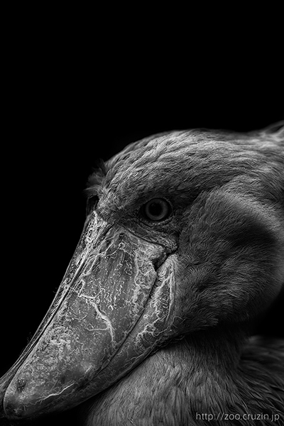

jQuery DESIGN METHOD
Original Tooltip Samples
Sample2 圖片點擊預覽（簡單的圖片放大功能）
data-tips-image屬性設定圖片路徑(檔名)
- 鯨頭鸛 Balaeniceps rex
- 
-
分佈於從埃塞俄比亞區的南蘇丹到贊比亞為的濕地。在IUCN的絕種名單中為在滅絕等級II類的物種，因此受到華盛頓公約國際交易的限制。
全長約1.2M、體重約5Kg的大型鳥類。有一張巨大的嘴，其特徵是在獵取動物時可維持數小時的靜止，這是為了避免碩大的身體引起魚類的警戒る。喜愛大型的肺魚，會在肺魚浮出水面時以非常快的速度用嘴捕捉。需花費數小時消化，此獵捕行為佔去消耗體力的30%。
- 蘇門答臘虎 Sumatran Tiger

-
蘇門答臘虎(英文名:Sumatran Tiger)是虎中最小的亞種，為目前現存的亞種中存在最南，亦是唯一存活在島上的一種虎。
生存區域為為印尼蘇門答臘腦的熱帶雨林中，目前推測野生的尚有300~500隻，詳細資訊不同。為避免其於印尼絕種，1995年開始蘇門答臘虎專案以進行野生研究與保護活動。
- 亞洲獅 Lion
-
亞洲獅(學名Panthera leo persica)獅子的一個亞種，又名「波斯亞種」，是亞洲僅次於老虎之後第二的大貓科動物，原廣泛分布在從地中海西岸到印度北部的廣大地區，大部分野生種群已經滅絕，僅在印度古吉拉特邦的吉爾保護區內有少量分布。
亞洲獅的毛皮較其非洲近親蓬鬆，尾巴端的穗及肘上的毛髮較長。雄獅及雌獅的腹部都有明顯摺疊的皮膚。亞洲獅是所有獅子亞種中最細小的，雄獅重160-190公斤，雌獅重110-120公斤。